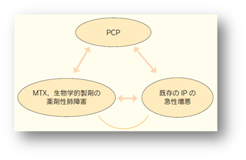

間質性肺炎
疫学、リスク因子
RAにおける間質性肺炎の合併頻度は20％前後
間質性肺炎発症のリスク因子：男性、高齢、喫煙歴、RA、抗CCP抗体高値、ESR高値
症状、所見、診断
主な症状：呼吸困難、咳嗽、発熱。頻度は低いものの、胸痛、血痰などの症状も報告されている
検査所見：KL-6、SP-Dの上昇
画像所見：すりガラス影を呈することが多いが網状影、浸潤影を呈することもある
既存の間質性肺炎が存在する場合は、元々ある蜂巣肺、網状影に、すりガラス影、ときに濃厚影が加わる
鑑別診断
- ①薬剤性肺障害：各薬剤の服用時期などを詳細に問診することが鑑別の参考になる
- ②PCP：β-D-グルカンの上昇、PCRなどが補助的診断として役立つ
- ③既存の間質性肺炎の増悪：臨床的にBIO製剤による薬剤性間質性肺炎との区別は困難
- ④インフルエンザ肺炎などの感染症

治療
呼吸不全を呈する症例には、ステロイド薬（プレドニゾロン0.5～1.0mg/kg/日等）が投与されることが多い。重症例にはステロイドパルス療法が行われる。その他、免疫抑制薬の併用や免疫グロブリンの大量静注も検討される。